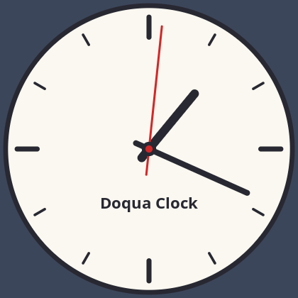

Clock
A custom control drawing an analog clock with lines and ellipses, redrawn every second.
Run it with dotnet run --project Examples/Clock.

Program.cs
using Doqua.GUI;
using Timer = Doqua.GUI.Timer;
namespace ClockExample;
/// <summary>Analog clock drawn entirely in OnRender; it scales to the control's size.</summary>
class AnalogClock : Control
{
private static readonly Color Face = new(250, 248, 240);
private static readonly Color Ink = new(40, 40, 50);
private static readonly Color SecondHand = new(210, 40, 40);
public AnalogClock()
{
// Redraw every second. The interval starts on the next whole second, so the second hand
// moves when the system clock's second changes instead of up to a second late.
var untilNextSecond = 1000 - DateTime.Now.Millisecond;
Timer.SetTimeout(() =>
{
Invalidate();
Timer.SetInterval(Invalidate, 1000);
}, untilNextSecond);
}
protected override void OnRender(DrawingContext dc)
{
float centerX = Width / 2f, centerY = Height / 2f;
var radius = MathF.Min(Width, Height) / 2f - 8;
if (radius < 20)
return;
// Face and rim.
dc.FillEllipse(centerX, centerY, radius, radius, Face);
dc.DrawEllipse(centerX, centerY, radius, radius, Ink, radius / 30);
// Twelve hour marks; the ones at 12, 3, 6 and 9 are longer and thicker.
for (var hour = 0; hour < 12; hour++)
{
var major = hour % 3 == 0;
var angle = hour * MathF.Tau / 12;
var outer = radius * 0.92f;
var inner = radius * (major ? 0.78f : 0.84f);
DrawRadial(dc, centerX, centerY, angle, inner, outer, Ink, radius * (major ? 0.035f : 0.018f));
}
// Caption under the center.
var font = Font.Default with { Size = MathF.Max(8, radius * 0.11f), Style = FontStyle.Bold };
const string caption = "Doqua Clock";
var captionSize = font.MeasureText(caption);
dc.DrawText(caption, font, Ink, (int)(centerX - captionSize.Width / 2f), (int)(centerY + radius * 0.3f));
// Hands, from the current time. Hours and minutes move smoothly between marks.
var now = DateTime.Now;
var seconds = now.Second;
var minutes = now.Minute + seconds / 60f;
var hours = now.Hour % 12 + minutes / 60f;
DrawRadial(dc, centerX, centerY, hours * MathF.Tau / 12, -radius * 0.08f, radius * 0.5f, Ink, radius * 0.06f);
DrawRadial(dc, centerX, centerY, minutes * MathF.Tau / 60, -radius * 0.1f, radius * 0.75f, Ink, radius * 0.04f);
DrawRadial(dc, centerX, centerY, seconds * MathF.Tau / 60, -radius * 0.18f, radius * 0.86f, SecondHand, radius * 0.015f);
// Hub over the hands.
dc.FillEllipse(centerX, centerY, radius * 0.05f, radius * 0.05f, Ink);
dc.FillEllipse(centerX, centerY, radius * 0.025f, radius * 0.025f, SecondHand);
}
/// <summary>
/// Line along the direction <paramref name="angle"/> (radians clockwise from 12 o'clock), from
/// distance <paramref name="from"/> to <paramref name="to"/>; a negative start makes a tail.
/// </summary>
private static void DrawRadial(DrawingContext dc, float centerX, float centerY, float angle,
float from, float to, Color color, float thickness)
{
float dx = MathF.Sin(angle), dy = -MathF.Cos(angle);
dc.DrawLine(centerX + dx * from, centerY + dy * from, centerX + dx * to, centerY + dy * to, color, thickness);
}
}
static class Program
{
[STAThread]
static int Main() => Application.Run(new Window
{
Title = "Doqua Clock",
Icons = ExampleIcon.Load(),
Width = 420,
Height = 420,
Background = new Color(60, 70, 90),
Content = new AnalogClock(),
});
}